Takahamacho, Fukui: things to do, food and stays
Takahamacho · Fukui
Takahamacho
Highlighted on the Fukui map.

Stay
ホテルルートイン大飯高浜
Hotel Route Inn Oi Takahama
Hotel at Danjobetsujinko Onsen in Miyazaki, Takahamacho with a large communal bath.
若狭サーフホテル イルマーレ
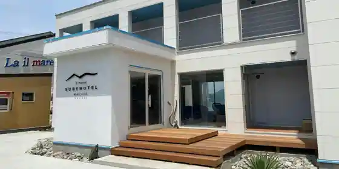
Wakasa Safu Hotel Irumare
インフィニティリゾート高浜
Infinitei Resort Takahama
海辺のお宿 波の音
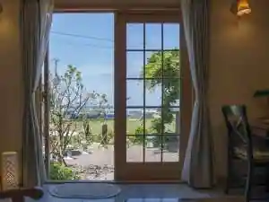
Umibe No Yado Nami No Oto
高浜のお宿 鼓松
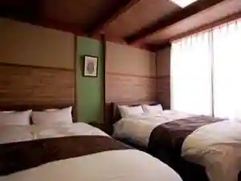
Takahama No Yado Tsuzumi Matsu
民宿旅館やまぐち
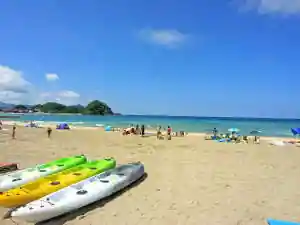
Minshuku Ryokan Yamaguchi
登喜丘荘
Toki Oka So
リゾートインキシモト
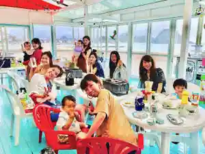
Resort Inkishimoto
農家民宿 利右衛門
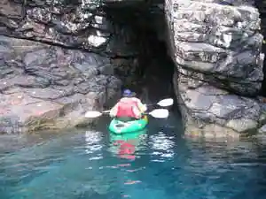
Noka Minshuku Riemon
ＢＥＡＣＨ ＳＩＤＥ ＶＩＬＬＡＧＥ ＦＡＭＩＬＩＡＲ
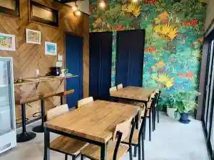
BEACH SIDE VILLAGE FAMILIAR
農家民宿 きあぬ りよもん
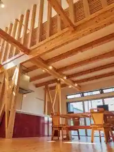
Noka Minshuku Kianu Riyomon
Family-run minshuku in Higashimimatsu, Takahamacho with business travelers.
かえもん旅館
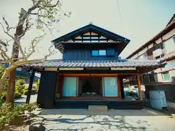
Kaemon Ryokan
Ryokan inn in Wada, Takahamacho with a renovated traditional house; 5-minute walk from Jrnishinihonwakasawada Station.
Dining
ブルーライト ヨコヤマ
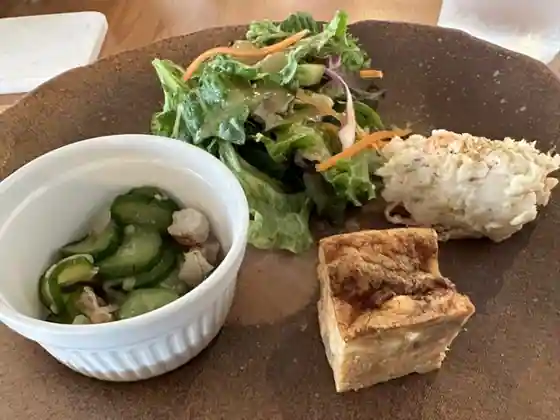
Bururaito Yokoyama
のぶ幸
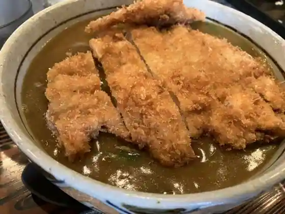
Nobu Sachi
レストラン 源治
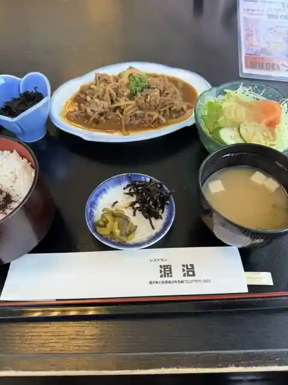
Restaurant Genji
ラ・イルマーレ
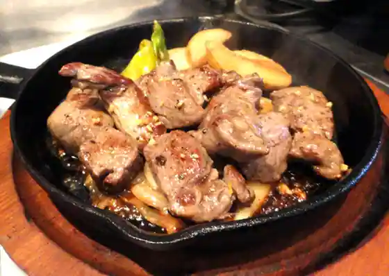
Ra Irumare
麺や 天晴
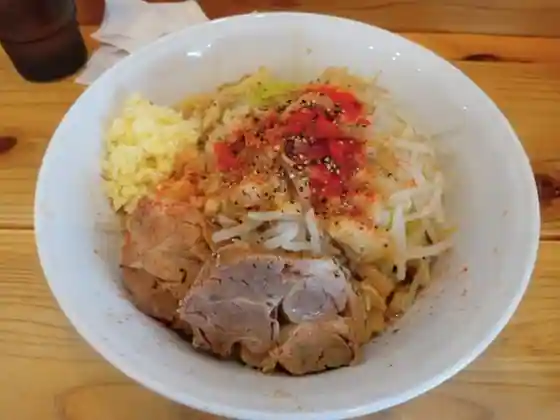
Men Ya Appare
ファミリア
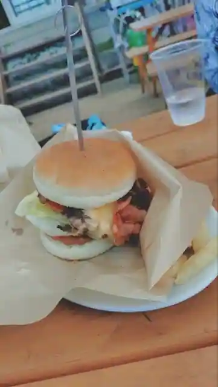
Famiria
御菓子処 大次郎
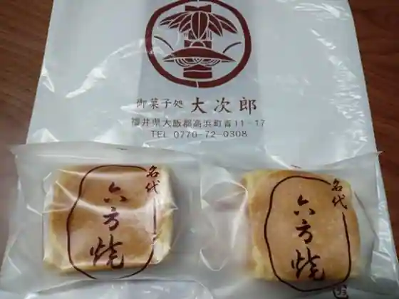
O Kashi Tokoro Daijiro
禄縁 高浜店
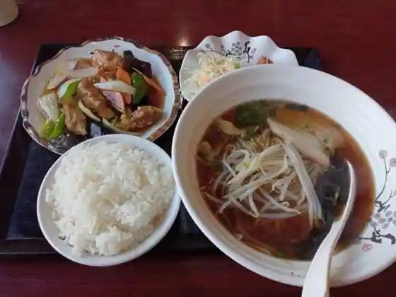
Roku Heri Takahama
キクスイ
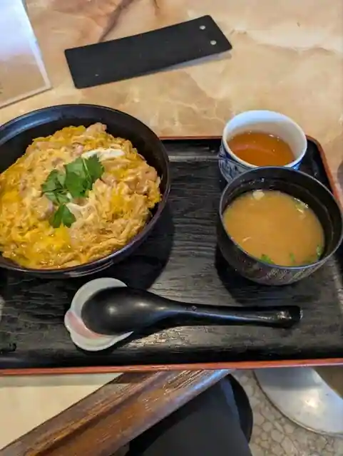
Kikusui
台湾料理 萬盛
Taiwan Ryori Man Jo
一文字
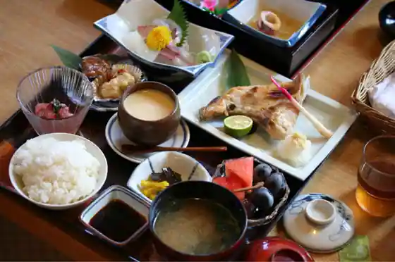
Hitomoji
ぽっぽフジワラ
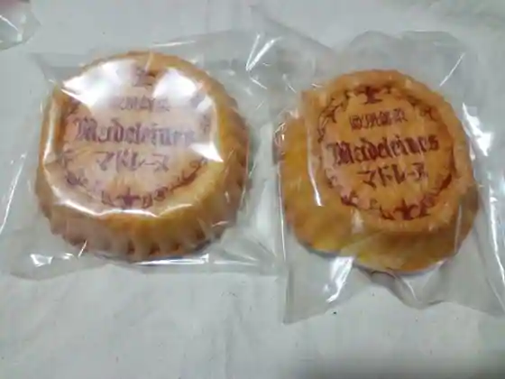
Poppo Fujiwara
セピア
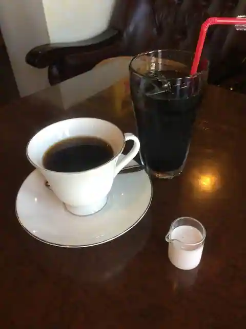
Sepia
アン・ヴェルヴ
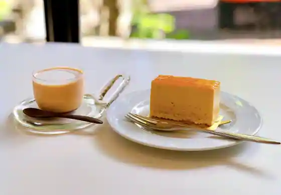
An Veruvu
源六餅本舗
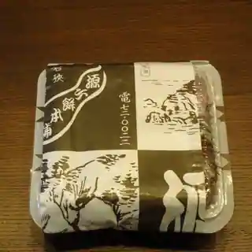
Genroku Mochi Honpo
むらみや
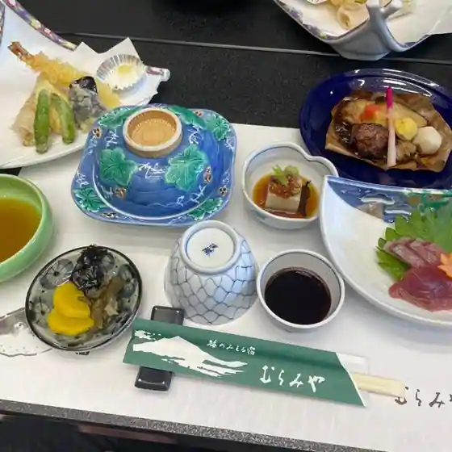
Muramiya
宮崎食堂
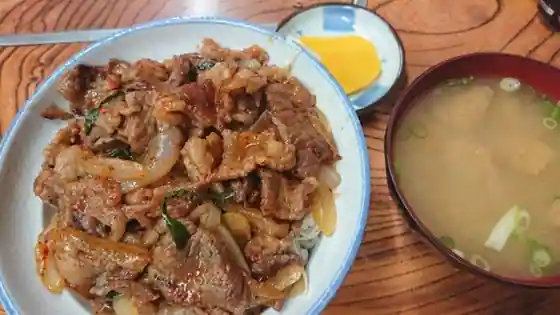
Miyazaki Shokudo
パンドレ
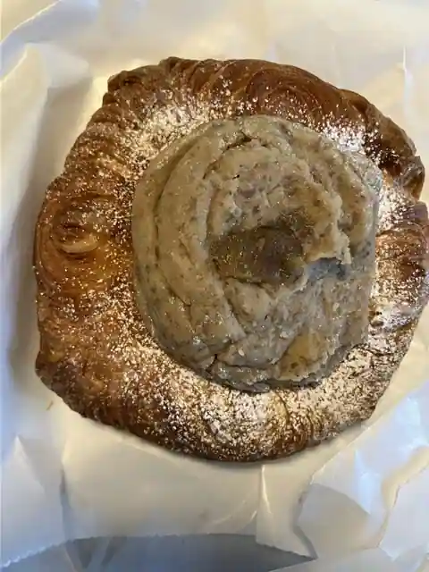
Bakery Dore
清風
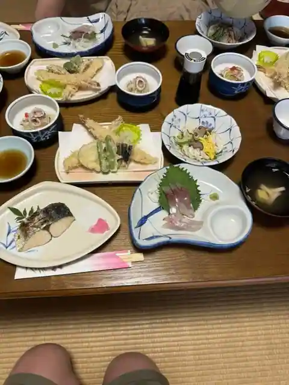
Seifu
光泉
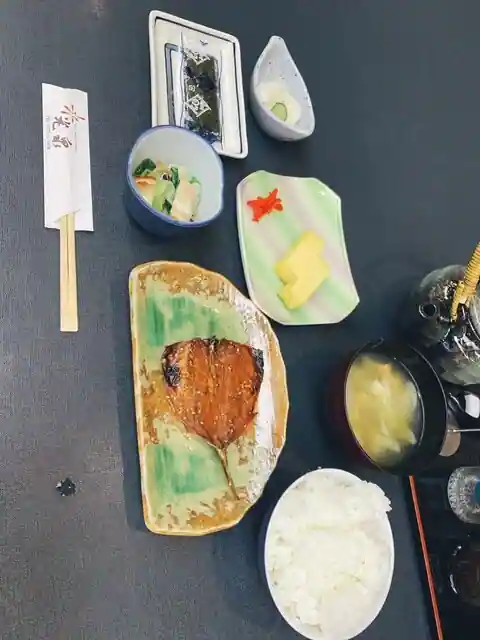
Kosen
秦秦
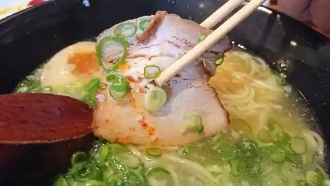
Shin Shin
ふぐ料理 五作荘
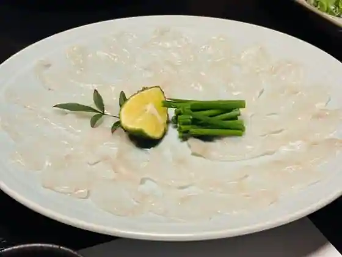
Fugu Ryori Gosaku So
Sights
Wakasa Wada Beach

Shiroyama Park Meikyo Hora (Shiroyama Beach)
Wakasa Takahamacho Umizuri Ri Park

Aobayama

Wakasa Wada Campground

Torii Hama Beach Shirahama Beach
Uma Kyo Tera
Taisei Tera
Kenko Choju Village Aobayama Habarubirejji
UMIKARA
Rentasaikuru - Takahamacho - Wakasa Takahamacho Eki (Wakasa Takahamacho Tourism Association)
Nakayama Tera
Wakasa Takahama Eru Dorando
Kumano Shrine
Takahamacho Local History Museum
Hamanasu BBQ Park
Hiroseoto Campground
Oto Kaidai Dangai
Wakamiya Beach
Ebisu Hama Park Beach
Goshiki Yama Park
Hamanasu Park Beach
Sa Ki Osamu Shrine
Takumi no Art Museum
Hana Forest
Shingu Shrine
Shoraku Tera
Takahamacho Town Hall